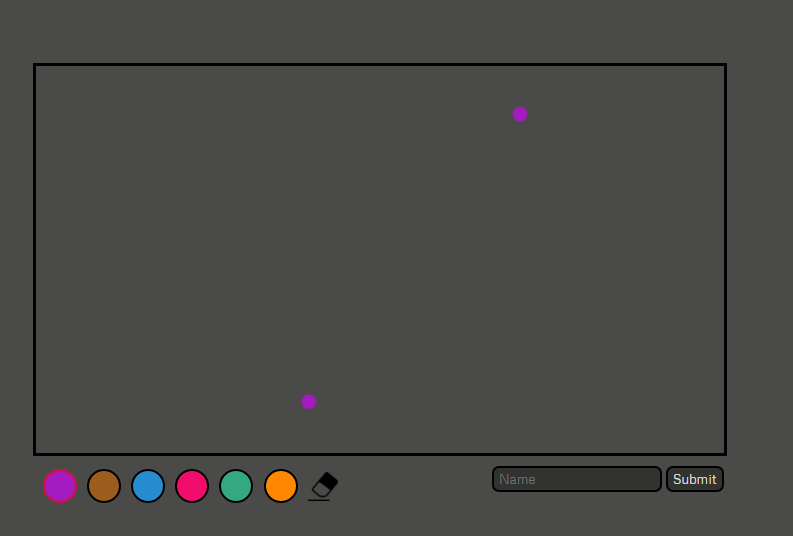

Welcome to Metro Matcher. A browser gamed, based on real life Metros. The aim is to draw the map of a metro which you don't know, using only the info of the metro's lines. Read below for a more in depth explanation, otherwise, select your metro to the right and click play!
How To Play
You will be given the lines of the metro, along with the colours of the line, and the stops. You will also be told which stops change over with other lines, with the other line(s) specified. Using this info, you are to try draw the metro's map using the info.
On a canvas, you will be given the start and end of one line. You can select the colours of the lines to draw with, or use the erase tool to erase mistakes.

In this example here, it would be a good idea to draw a line from point to point, and then use the line's info to determine where other lines crossover.
From there, you can use the other lines' info and stops (perhaps even the names too!), to deduce the rest of the lines. Once you submit your solution, you will be given a score (0-100) of how close you managed to draw the map compared to the actual map.